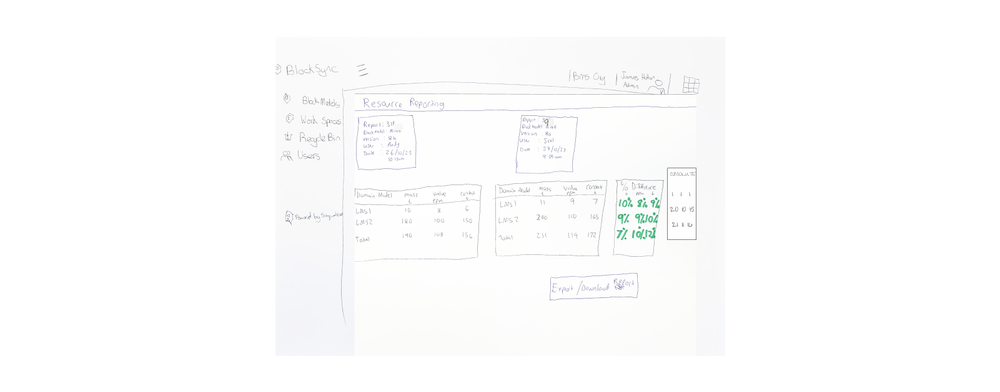

Day 4 - Testing
We conducted one-hour meetings with the participants. These sessions started with an introduction to discovery sprints, our sprint goal followed by participants briefly talking about their roles and experiences. We provided them with a clickable prototype for interactive exploration, during which we identified successful components and areas of confusion, along with questions and ideas for the future.
Participants expressed enthusiasm for the comparison features, sparking discussions around pain points, scenarios, and use cases. All participants stressed the importance of including percentage differences alongside raw numbers in the comparison screen, as it enables them to be more agile and responsive in their processes, contrasting with their previously rigid and time-consuming approach. The automatic report creation upon block model changes was well-received for streamlining the process, with customers mentioning the importance of consistency and the challenges of frequent model updates.
"Those comparisons that we do is by creating shapes and then we will do like a resource report, export that out into Excel and then do comparisons that way… Then we'll go back to previous version. So that's probably the clunkiest part of the workflow, is when you want to see the impact of whether you're where the grade has changed within your model..." - Participant, Superintendent Mine Geologist

Comparison feature. On the right it shows % difference between two reports, saving hours of manual data entry and configuration